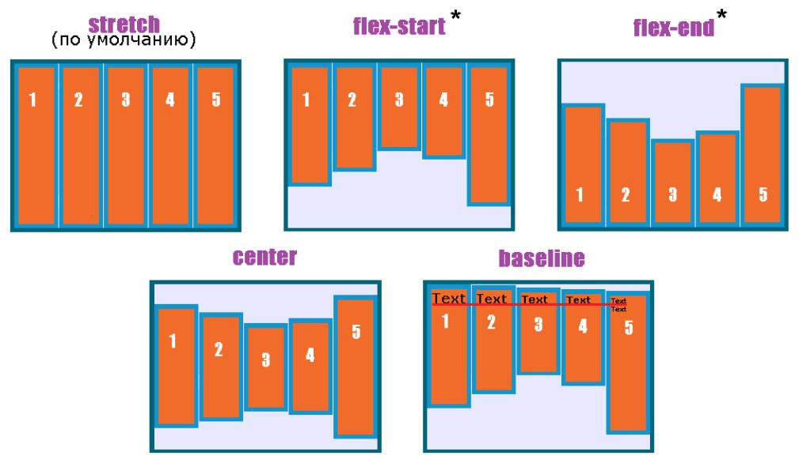

Flexbox
Основные используемые теги
«header» – шапка
«footer» – подвал
«section» – секция
«article» – статья, заметка используется в сайтах со статьями, новостями
«nav» – навигационная панель
«aside» – боковая панель
«figure» – фигура, составной элемент, состоящий из нескольких элементов
«figcaption» – заголовок составной фигуры, находится внутри тега «figure»
«hgroup» – группа заголовков, используется тогда, когда необходимо сгруппировать несколько заголовков «h»
«time» – метка времени, используется тогда, когда необходимо указать дату и время события. Для данного тега используется атрибут «datetime»
«Flexbox»
«Flexbox» появился в CSS3 – это новый способ верстки страницы без использования «block», «inline-block» и др. Существует два значения свойства «display», относящиеся к методике «flexbox» и описывают поведения flex-элементов:
- «display: flex»
- «display: inline-flex»
Модель «Flexbox»
Главная ось (main axis) — ось, вдоль которой выкладываются flex-элементы. Она простирается в основном измерении.
Main start и main end — линии, которые определяют начальную и конечную стороны flex-контейнера, относительно которых выкладываются flex-элементы (начиная с main start по направлению к main end).
Основной размер (main size) — ширина или высота flex-контейнера или flex-элементов, в зависимости от того, что из них находится в основном измерении, определяют основной размер flex-контейнера или flex-элемента.
Поперечная ось (cross axis) — ось, перпендикулярная главной оси. Она простирается в поперечном измерении.
Cross start и cross end — линии, которые определяют начальную и конечную стороны поперечной оси, относительно которых выкладываются flex-элементы.
Поперечный размер (cross size) — ширина или высота flex-контейнера или flex-элементов, в зависимости от того, что находится в поперечном измерении, являются их поперечным размером.
Направление расположения элементов внутри flex-контейнера задается с помощью свойства «flex-direction», которое задается flex-контейнеру. Значения свойства «flex-direction»:
- «row» – элементы располагаются стандартным образом, т.е. слева-направо, затем сверху-вниз
- «row-reverse» – элементы располагаются справа-налево, затем сверху-вниз
- «column» – элементы располагаются сначала сверху-вниз, затем слева-направо
- «column-reverse» – элементы располагаются сначала снизу-вверх, затем слева-направо
Управление многострочностью flex-контейнера происходит с помощью свойства «flex-wrap»:
- «wrap» – flex-элементы переносятся на новые линии
- «nowrap» – flex-элементы не переносятся (значение по умолчанию)
- «wrap-reverse» – flex-элементы переносятся на новые линии, располагаясь в обратном порядке
Свойство «flex-flow» объединяет свойства «flex-direction» и «flex-wrap»
Выравнивание по главной оси производится с помощью свойства «justify-content». Это свойство выравнивает flex-элементы по главной оси flex-контейнера, распределяя свободное пространство, незанятое flex-элементами. Значения свойства «justify-content»:
- «flex-start» – элементы располагаются друг за другом и прижимаются к началу контейнера по главной оси, в зависимости от её направления (flex-direction). Для элементов, которые не являются дочерними элементами flex контейнера, это значение обрабатывается как start (значение по умолчанию)
- «flex-end» – элементы располагаются друг за другом и прижимаются к концу контейнера по главной оси, в зависимости от её направления (flex-direction). Для элементов, которые не являются дочерними элементами flex контейнера, это значение обрабатывается как end.
- «center» – элементы располагаются друг за другом в центре контейнера по главной оси.
- «space-between» – элементы равномерно распределены вдоль главной оси контейнера. Расстояния между каждой парой соседних элементов равны. Первый элемент прижат к началу контейнера по главной оси, а последний - к концу.
- «space-around» – элементы равномерно распределены вдоль главной оси контейнера. Расстояния между каждой парой соседних элементов равны. Пустые пространства перед первым элементом и после последнего элемента равны половине расстояния между парами соседних элементов.
- «space-evenly» – элементы равномерно распределены вдоль главной оси контейнера. Расстояния между каждой парой соседних элементов равны расстояниям от начала контейнера до первого элемента и от последнего элемента до конца контейнера.
Свойство «align-items» располагает flex-элементы в одном проходе главной оси. Имеет следующие значения:
- «flex-start» – flex-элементы выравниваются в начале поперечной оси контейнера.
- «flex-end» – flex-элементы выравниваются в конце поперечной оси контейнера.
- «center» – flex-элементы выравниваются по линии поперечной оси.
- «baseline» – flex-элементы выравниваются по их базовой линии.
- «stretch» – flex-элементы растягиваются таким образом, чтобы занять всё доступное пространство контейнера.

Свойство «align-content» выравнивает строки в flex-контейнере при наличии дополнительного пространства на поперечной оси, аналогично выравниванию отдельных элементов на главной оси с помощью свойства justify-content. Свойство не влияет на однострочный flex-контейнер. Значения свойства:
- «flex-start» – строки располагаются в начале поперечной оси. Каждая следующая строка идёт вровень с предыдущей
- «flex-end» – строки располагаются начиная с конца поперечной оси. Каждая предыдущая строка идёт вровень со следующей.
- «center» – строки располагаются по центру контейнера.
- «space-between» – строки равномерно распределяются в контейнере и край первой строки помещается вплотную к начальному краю содержимого flex-контейнера, край последней строки — вплотную к конечному краю содержимого flex-контейнера. Остальные строки распределены так, чтобы расстояние между любыми двумя соседними строками было одинаковым.
- «space-around» – cтроки равномерно распределены в flex-контейнере с половинным пробелом на обоих концах, причем строки распределяются таким образом, чтобы расстояние между любыми двумя соседними строками было одинаковым, а расстояние между первой/последней строками и краями содержимого flex-контейнера составляло половину от расстояния между строками.
- «stretch» – строки flex-элементов равномерно растягиваются, заполняя все доступное пространство, которое будет разделено поровну между всеми строками, увеличивая их поперечный размер.
- «space-evenly» – строки равномерно распределяются таким образом, чтобы пространство между двумя соседними строками, а также пространство перед первой строкой и после последней строки было одинаковым.
Свойства для элементов, находящихся внутри flex-контейнера:
- «flex-grow» – свойство определяет коэффициент роста одного flex-элемента относительно других flex-элементов в flex-контейнере. Значение задается, как число положительное целое или дробное число, устанавливающее коэффициент роста flex-элемента (значение по умолчанию 0).
- «order» – свойство определяет порядок, в котором flex-элементы отображаются и располагаются внутри flex-контейнера
- «flex-basis» – определяет начальный размер flex-элемента
- «flex-shrink» – определяет, как flex-элемент будет уменьшаться относительно других flex-элементов во flex-контейнере
- «align-self» – позволяет переопределить это выравнивание для отдельных flex-элементов, аналогичен свойству «align-items»